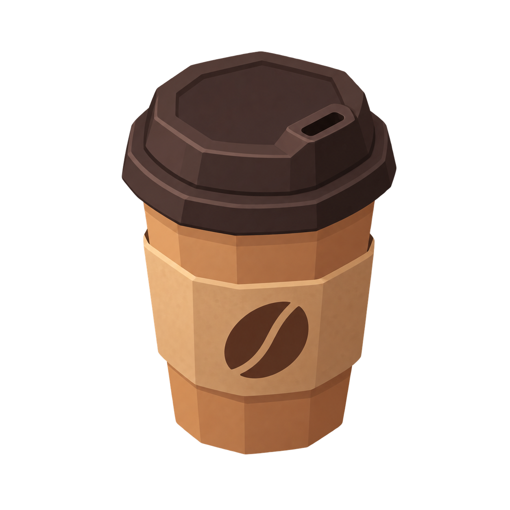
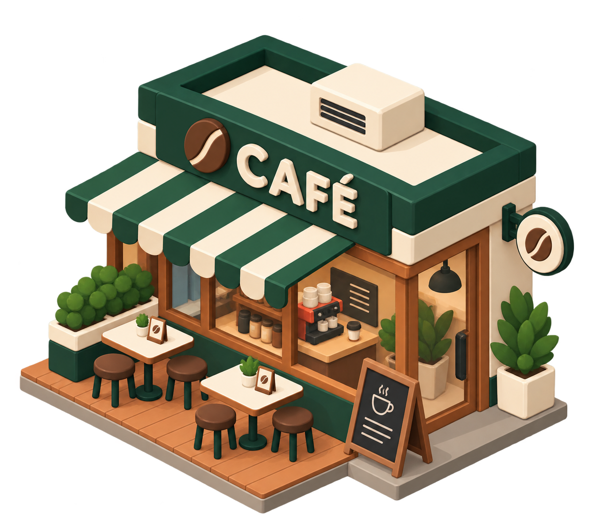
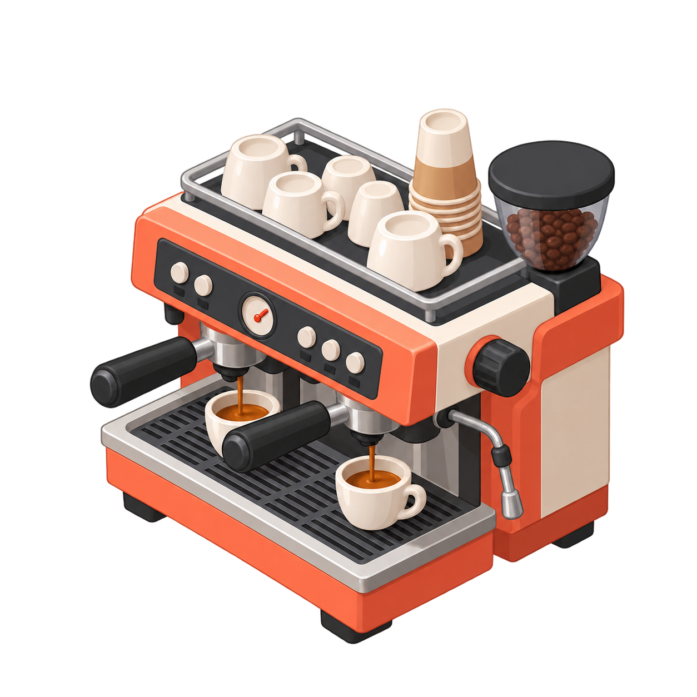
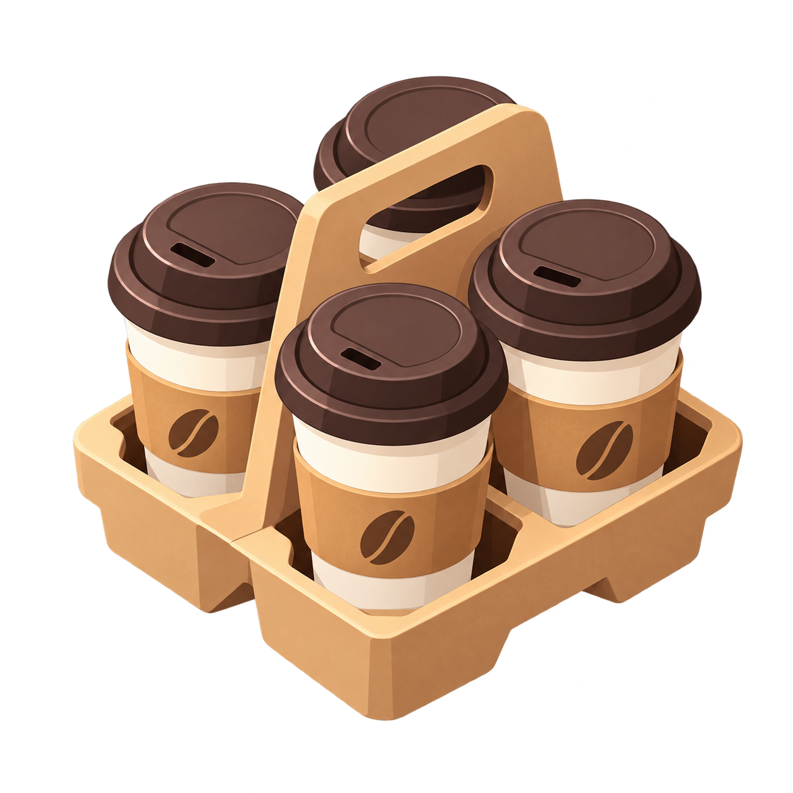

Hazırla. Taşı. Servis et.
Makineden sıcacık kahveleri al, tepsiye bırak ve müşterilerini mutlu et. Kafenin hareketine sen yön ver.

✳ LUDOPIA’DAN SICACIK BİR OYUN
Kahveler hazır, hayaller büyük. Cafe Rush’ta ilk müşterini karşıla, kendi ekibini kur ve küçük kafeni hareketli bir buluşma noktasına dönüştür.
küçük bir kafe,
büyük hayaller.

CAFE RUSH — IDLE TYCOON
CAFE RUSH: IDLE TYCOON
Bir kahve makinesiyle başlayan yolculuk, her yeni müşteriyle büyür. Tezgâhın iki tarafında da hayat var.
Makineden sıcacık kahveleri al, tepsiye bırak ve müşterilerini mutlu et. Kafenin hareketine sen yön ver.

Çalışanları işe al, kapasiteni artır ve makinelerini geliştir. İşler büyüdükçe ekibin yanında olsun.

Yeni masalar, paket kahveler ve araç servisi. Kazandığın coinlerle kafene yeni bir soluk kat.

KÜÇÜK DETAYLAR, GÜZEL MOLALAR
Rengârenk müşteriler, tatlı bir telaş ve büyüttükçe sana ait olan bir kafe. Ludopia’da oyunları küçük keyif anları için yapıyoruz.
BİZ BURADAYIZ
Oyun hakkında yardıma mı ihtiyacın var? Bir fikrin, geri bildirimin ya da hesap talebin varsa bize yaz.
Ludopia destek ↗